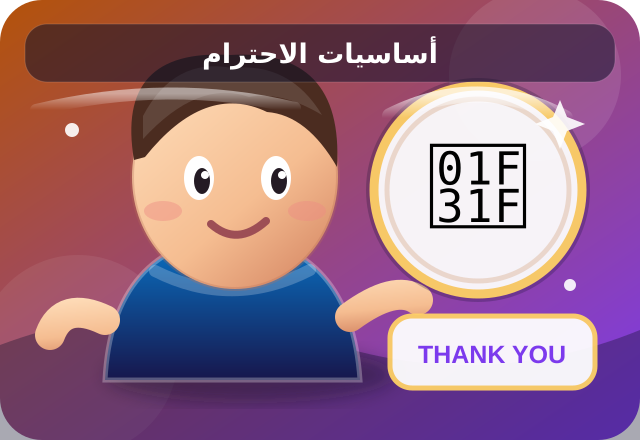
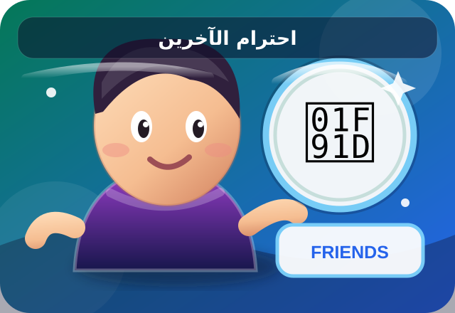
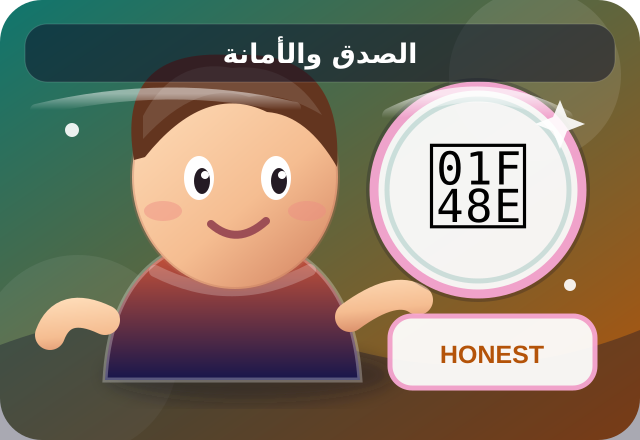
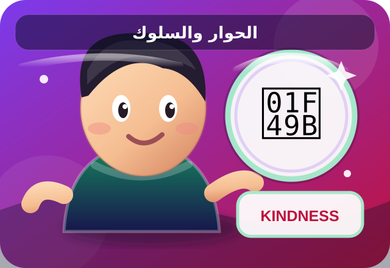

SMART EDU 365
كورس الاحترام والأخلاق وحُسن التعامل
كورس تعليمي لطفلك باللغة العربية، يتكوّن من أربع مراحل متدرجة. تعلّم السلوك الحسن وطبّقه في حياتك اليومية.
🎯 ماذا سيتعلم طفلك؟
- استخدام كلمات مهذبة والتحية والاستئذان.
- احترام الوالدين والأسرة والمعلم والأصدقاء.
- تعلم الصدق والأمانة والاعتذار والتسامح.
- الحوار الهادئ وحل الخلافات بطريقة سليمة.
- تحمّل المسؤولية والمحافظة على النظام والنظافة.
أربع مراحل تعليمية · مهمة سلوكية يومية · استماع · اختبار نهائي · شهادة تحفيزية
🤖 المعلّم الذكي المجاني
اسأل عن الاحترام والوالدين والصدق والاعتذار والسلوك اليومي، واستمع إلى شرح مبسّط.
تحدث مع المعلّم الذكي ←اجمع نجوم المراحل بالتدرج، ثم انتقل إلى الاستماع والاختبار النهائي.

المرحلة الأولى: أساسيات الاحترام ⭐
- التحية الطيبة: أبدأ يومي بالسلام والابتسامة، وأرد التحية بأحسن منها.
- الكلمات الجميلة: أستخدم كلمات مهذبة مثل: «من فضلك»، و«شكراً»، و«عفواً».
- الاستئذان: أستأذن قبل استخدام أغراض الآخرين، وأحترم خصوصيتهم.
- النظافة والنظام: أحافظ على نظافة المكان وأعيد الأشياء إلى مواضعها.
- انتظار الدور: لا أقاطع المتحدث، وأنتظر دوري بهدوء.

المرحلة الثانية: احترام الآخرين ⭐⭐
- الأسرة: أتحدث مع والديّ وأفراد أسرتي بلطف وأساعدهم.
- المعلم: أنصت للمعلم وألتزم بالتعليمات وأطلب التوضيح بأدب.
- الأصدقاء: أشارك وأتعاون ولا أسخر من أحد.
- الكبير والصغير: أوقّر الكبير وأعامل الصغير برفق.
- الخصوصية: لا أفتّش في أغراض الآخرين، ولا أفشي أسرارهم.

المرحلة الثالثة: الأخلاق والسلوك ⭐⭐⭐
- الصدق: أقول الحقيقة، حتى عندما أخطئ.
- الأمانة: أحافظ على الأمانة، وأعيد إلى أصحابها ما ليس لي.
- الاعتذار: أعترف بخطئي وأعتذر وأحاول إصلاحه.
- التسامح: أقبل الاعتذار عندما أستطيع، مع المحافظة على سلامتي وحدودي الشخصية.
- ضبط الغضب: أهدأ، وأتنفّس بعمق، وأختار كلمات لا تؤذي الآخرين.

المرحلة الرابعة: التعامل في الحياة ⭐⭐⭐⭐
- الحوار: أستمع جيداً، وأتحدث بهدوء.
- الاختلاف: أشرح رأيي دون إهانة أو سخرية.
- حل الخلاف: أبحث عن حل عادل وأطلب مساعدة عند الحاجة.
- مواجهة التنمر: لا أرد بالأذى، وأخبر شخصاً بالغاً موثوقاً.
- المسؤولية: أفي بوعودي، وأبادر إلى مساعدة من حولي.
🌟 ركن «أنا طفل خلوق»
كل يوم، اختر سلوكاً جميلاً وطبّقه في البيت أو المدرسة؛ فالأخلاق تظهر في أفعالنا اليومية.
أقول لوالديّ كلمة جميلة وأشكرهما.
عندما تنجز المهمة اضغط الزر لتحصل على تشجيع.
تتغيّر المهمة كل يوم، وقد تكون: مساعدة الوالدين، أو ترتيب الغرفة والكتب، أو الاعتذار عند الخطأ، أو احترام الآخرين، أو قول كلمة طيبة.
بعد إكمال مراحل الكورس الأربع
استمع إلى القصة العربية الشاملة، ثم أجب عن الاختبار النهائي. عند النجاح ستتمكن من إصدار شهادتك التحفيزية.
تذكّر: الاحترام لا يعني قبول الإساءة أو السكوت عن الأذى. اطلب مساعدة شخص بالغ موثوق إذا شعرت بالخطر.